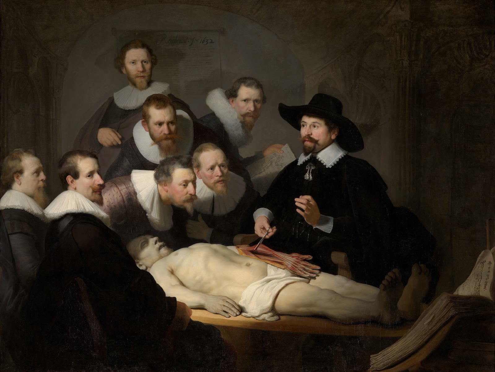

Even laden…
Mede mogelijk gemaakt door

Naar BETT 2027: de leraar voorop
De plek voor de deelnemers aan de reis: mededelingen, de magazines en de meesterspiegel, een prikbord, foto's delen en zien wie er meegaat. Vóór, tijdens en na Bett.
Even laden…
Mede mogelijk gemaakt door